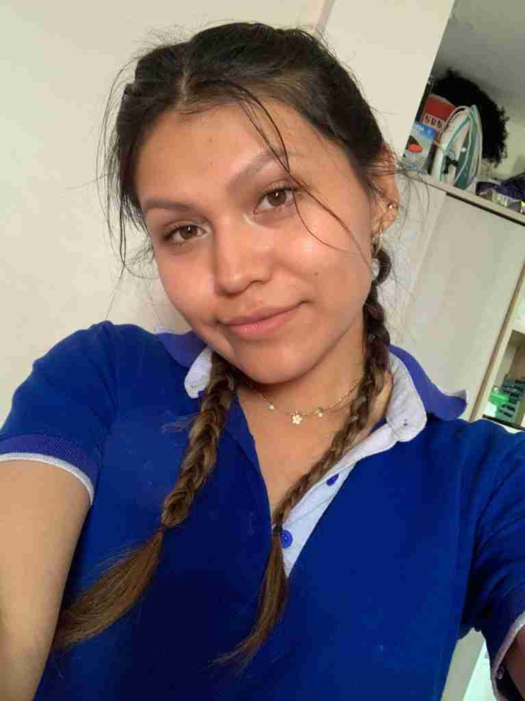

Maria Jose Montoya Cárdenas
Hola, soy Maria Jose Montoya Cárdenas, tengo 19 años y actualmente estudio Administración de Negocios en la Universidad Católica San Pablo, donde me apasiona aprender sobre gestión y estrategias. A lo largo de mi carrera estoy cursando materias que me han permitido desarrollar habilidades prácticas en el área, como negociar, investigación y estudios de mercado. También he tenido la oportunidad de fortalecer mis habilidades blandas, lo que me ha permitido mejorar mi interacción, comunicación y liderazgo.
Cursos Destacados
-
Estadística y Probabilidades –
Ricardo Enríquez Cáceres
-
Lógica y Gnoseología –
Kristel Gisselle Loayza Cruz
-
Microeconomía –
Marcela Zalazar Soler
-
Introducción de Ciencia de la Computación –
Ernesto Cuadros
-
Desarrollo de Habilidades de Negociación –
Renzo Menchola Tenorio
-
Antropología y Epistemología de las Ciencias Empresariales –
Germán Chavez Contreras
y Aldo Giacchetti Pastor
Intereses
- Me gusta hacer todo tipo de deporte, pero sobre todo el básquet.
- Amo pasar tiempo en familia y con las personas que quiero.
- Pertenezco al elenco de cajón de la San Pablo.
- Me encanta organizar equipos y trabajar en objetivos comunes.
- Escucho música bailable y amo cocinar.